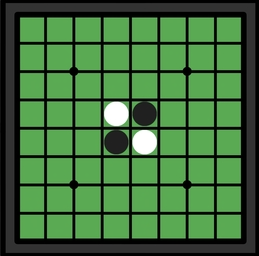
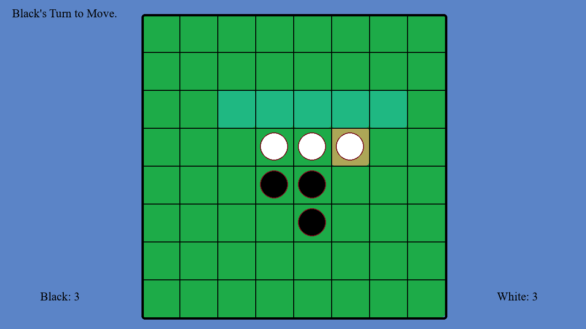

A Recreation of Othello
This project is a recreation of Othello using Pygame and Python.
The game gives options to play against another player or AIs of various difficulty. Logs are also maintained for error patching and game records.
The difficulty of the AI varies from easy and medium, to hard and expert. The easy AI chooses its moves randomly, the medium AI uses a greedy algorithm, the hard algorithm uses a minimax algorithm with depth 2, and the expert algorithm uses a minimax algorithm with depth 5 and alpha-beta pruning to reduce computation time.
Gameplay View:
The source code can be found here, along with a zipfile that can be downloaded to play the game!